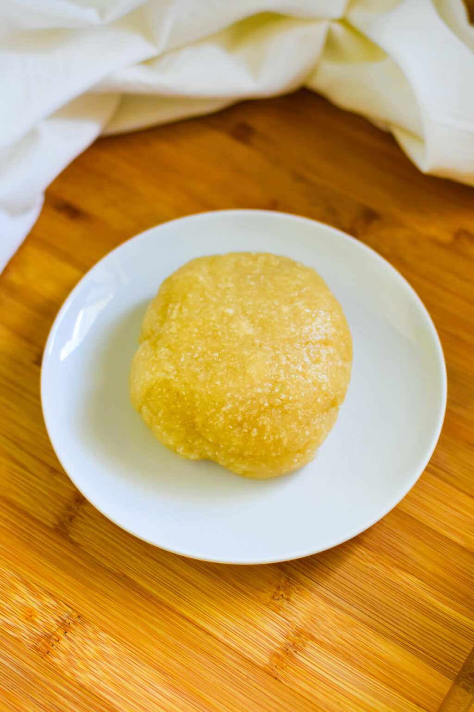

How To Make Eba
Eba is an essential Nigerian swallow food made from cassava, and it is aired with soup. I will be showing you how to make eba with just two ingredients in under 20 minutes.
Ingredients
Steps
- Boil sufficient quantity of water in a kettle or pot for 15-20 minutes, the remove from heat.
- After confirming that the water is thoroughly boiled, get a bowl and pour part of the water into the bowl.
- After pouring water into the bowl, add your garri to the water evenly till it is absorbed. If the quantity of garri is more than the water, you can add more water. A standard ratio of 1 part garri to 2 part water is advised.
- Leave the garri to soldify for a few minutes, at most two minutes.
- Stir(turn) with a wooden spatula to your desired texture, a soft and lumpless eba is the goal. To get this, you press, scoop and flip it with your spatula rather than swirl it or stir it.
- The eba is ready to be served.